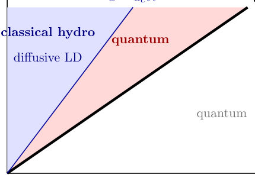
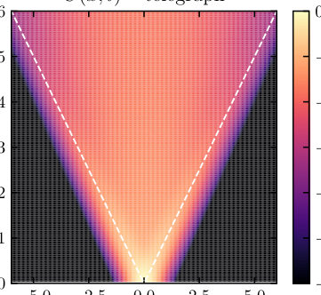


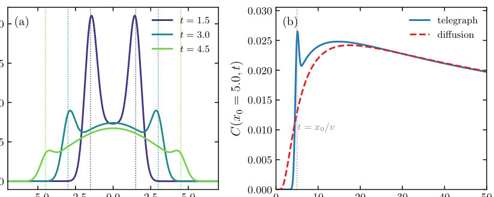
← Index · ← Previous · Next →
Authors: K. Aoyanagi, S. Abe, S. Chen, T. Inada, C. Kawai, Y. Mino, K. Nakamura, K. Nakazono, T. Nitta, K. Watanabe
Type: experiment · Category: quantum information and computing · PDF: https://arxiv.org/pdf/2605.19590v1
Analysis basis: full PDF text, analyzed in chunks
Topic relevance: 🔥 QC/QI experiment 4/5
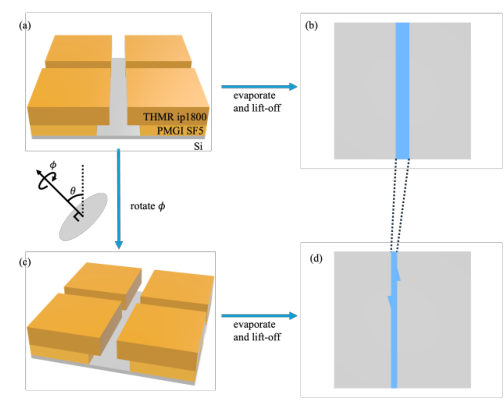
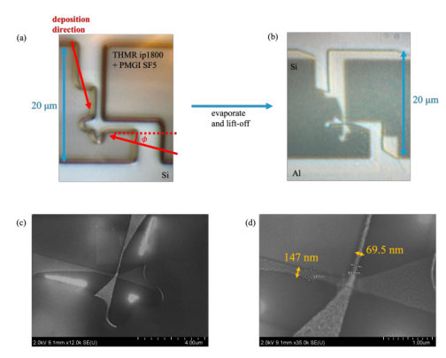
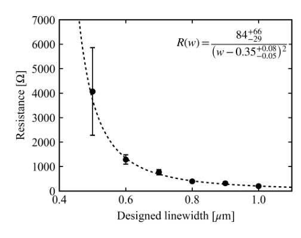
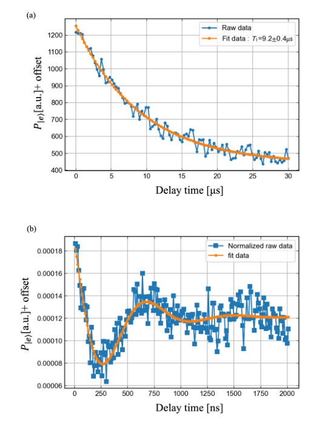
Summary. This paper presents a simplified fabrication technique for transmon qubits that uses standard photolithography instead of electron-beam lithography. By using a double-oblique evaporation geometry, the researchers successfully created small-scale Josephson junctions capable of supporting functional superconducting qubit operation.
Why it may be interesting. not directly relevant
Main problem. The need for a scalable, high-throughput fabrication process for transmon Josephson junctions that avoids the resolution limits and slow speeds of electron-beam lithography.
Main result. Demonstrated a photolithography-only process using double-oblique evaporation that achieves junction areas of 10^4 nm^2 and produces functional transmon qubits with T1 ~ 9 us.
Method. A modified double-oblique aluminum shadow evaporation process using a bilayer resist stack and a 375 nm maskless aligner, utilizing geometric shadowing to create narrow junction regions.
Model / system. Superconducting transmon qubits based on Aluminum (Al) Josephson junctions integrated into a three-dimensional (3D) Aluminum resonant cavity, measured at 20 mK.
Key observables. Qubit transition frequency (f01), relaxation time (T1), dephasing time (T2*), junction resistance (R), and junction area.
Important parameters / regimes. Deposition tilt angle (theta = 60 degrees), in-plane angular offset (phi = 15 or 25 degrees), and resist thickness.
Assumptions / limitations. The geometric model for linewidth reduction assumes an idealized shadowing effect and ignores non-ideal effects like metal re-emission or accumulation on resist sidewalls.
Figures summary. Figure 1 shows the double-oblique evaporation concept; Figure 2 displays structural characterization via optical microscopy and SEM; Figure 3 plots room-temperature resistance as a function of designed linewidth.
Paper structure. Introduction of the fabrication problem, description of the double-oblique evaporation method, structural characterization of the junctions, room-temperature resistance screening, low-temperature qubit performance evaluation, and a geometric model in the appendix.
We investigate a photolithography-only fabrication process for transmon Josephson junctions using a modified double-oblique evaporation geometry. Using a bilayer resist process and Al shadow evaporation, we fabricate junction structures and confirm by optical and scanning electron microscopy that the resulting narrowed crossing region reaches a geometrical area on the order of $10^4~\mathrm{nm}^2$, which lies in the size range relevant to qubit junction fabrication. Room-temperature resistance screening shows that the junction resistance falls within the target range for the present transmon design over a usable process window and exhibits a clear design dependence. We further implement fabricated junctions in transmon devices and evaluate them in a three-dimensional Al cavity at $20 \, \mathrm{mK}$, where we observe basic transmon qubit operation with $f_{01}$=4.865 GHz, $T_1 \sim 9 \, μ\mathrm{s}$, and $T_2^* \sim 0.4 \, μ\mathrm{s}$. These results demonstrate the feasibility of realizing functional transmon devices in a photolithography-only process using double-oblique evaporation.
Authors: Steffen Lauritzen, Piotr Zwiernik
Type: theory · Category: quantum information and computing · PDF: https://arxiv.org/pdf/2605.19453v1
Analysis basis: full PDF text, analyzed in chunks
Topic relevance: 🔥 entanglement & information structure 4/5
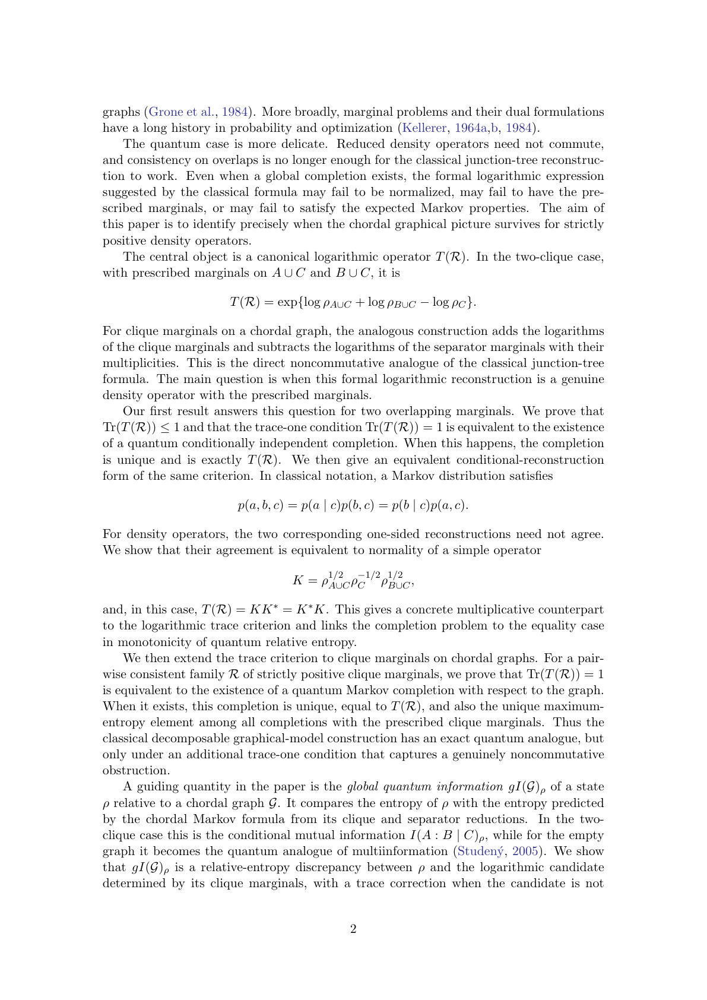
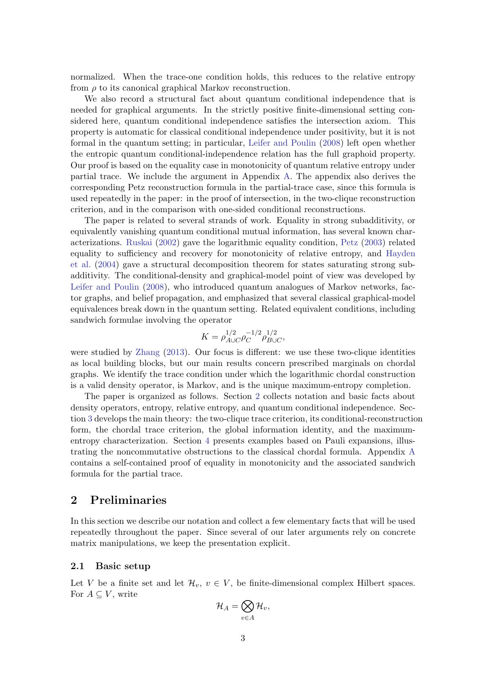
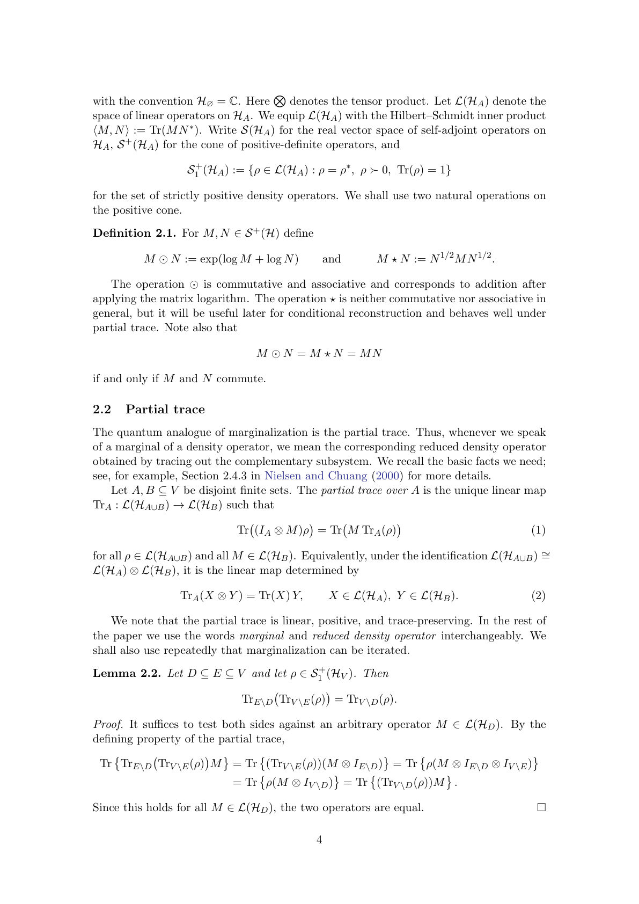
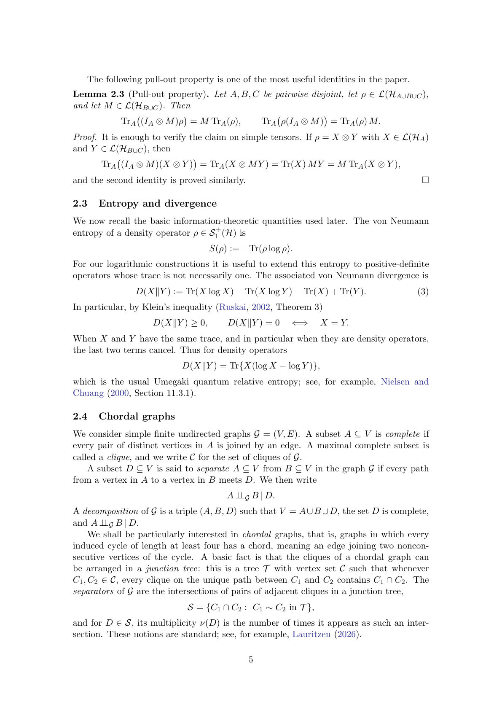
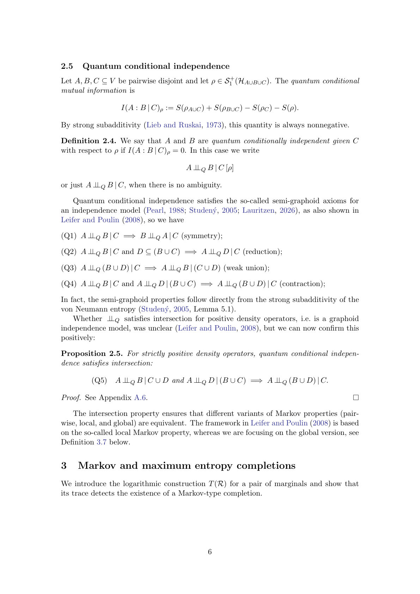
Summary. The paper addresses the quantum version of the marginal problem, identifying a trace-based obstruction to reconstructing global states from local marginals due to noncommutativity. It establishes that for chordal graphs, a unique maximum-entropy Markov completion exists if a specific trace condition is met. The study also quantifies the discrepancy between local and global information using relative entropy.
Why it may be interesting. This work provides fundamental insights into the compatibility of local quantum information, which is crucial for understanding the reconstruction of global states in quantum networks, many-body systems, and quantum error correction.
Main problem. Determining the conditions under which a set of local reduced density operators (quantum marginals) can be extended to a global quantum state that satisfies a prescribed Markov structure on a chordal graph.
Main result. The authors prove that a quantum Markov completion exists if and only if a specific trace condition, Tr(T(R)) = 1, is satisfied for a logarithmic construction, and that when it exists, the completion is the unique maximum-entropy state.
Method. The study uses a noncommutative analogue of the junction-tree formula, information-theoretic tools like quantum relative entropy and mutual information, and variational principles to relate entropy gaps to divergence measures.
Model / system. The paper considers multipartite density operators acting on finite-dimensional Hilbert spaces, specifically focusing on the dependency structures defined by undirected chordal graphs.
Key observables. Quantum relative entropy, von Neumann entropy, quantum conditional mutual information, and the global quantum information gI(G)rho.
Important parameters / regimes. The trace of the logarithmic candidate T(R), the strictly positive regime of density operators, and the chordal graph structure.
Assumptions / limitations. The results are derived specifically for strictly positive (non-singular) density operators and focus on chordal graphs.
Paper structure. The paper begins by defining the quantum marginal problem and the logarithmic construction, then progresses to the two-clique case, extends the results to chordal graphs via induction, introduces a global information measure, and concludes with three-qubit Pauli counterexamples and proofs for the intersection property.
We study when local reduced density operators, viewed as quantum marginals, can be assembled into a global quantum state with a prescribed Markov structure. The starting point is a canonical logarithmic construction $T(\mathcal R)$, the noncommutative analogue of the junction-tree formula for decomposable graphical models. Unlike in the classical case, this formal construction may fail: noncommutativity can prevent it from being a normalized state with the prescribed marginals. We prove that this obstruction is captured exactly by a trace condition. For two overlapping marginals, and for clique marginals on a chordal graph, the condition $Tr(T(\mathcal R))=1$ is equivalent to the existence of a quantum Markov completion. When it exists, the completion is unique, equal to $T(\mathcal R)$, and selected by the maximum-entropy principle. In the two-clique case, we also give an equivalent conditional-reconstruction characterization: the two natural one-sided sandwich reconstructions agree if and only if the trace condition holds. We introduce the global quantum information $gI(\mathcal{G})_ρ$ associated with a chordal graph $\mathcal G$ and show that it is a relative-entropy discrepancy from $ρ$ to the logarithmic candidate, with a trace correction when the candidate is not normalized. We also prove an intersection property for strictly positive quantum conditional independence. Three-qubit Pauli examples show that the quantum obstructions are real: local consistency, feasibility, Markov feasibility, and maximum entropy can all separate.
Authors: Andreas Fring, Marta Reboiro
Type: theory · Category: other · PDF: https://arxiv.org/pdf/2605.20019v1
Analysis basis: full PDF text, analyzed in chunks
Topic relevance: non-equilibrium dynamics 3/5 · Kondo & dissipative impurity 2/5 · Tavis-Cummings & cavity-many-emitter 2/5 · correlated / nonlocal dissipation 2/5 · driven-dissipative phase transition 2/5 · methods for driven-dissipative 2/5
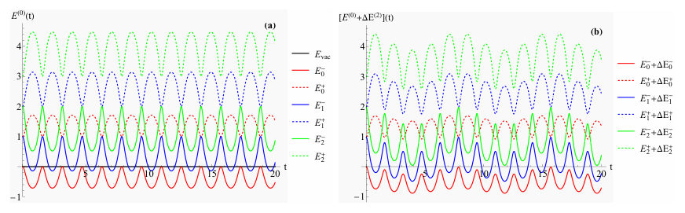
Summary. This paper explores a non-Hermitian spin-boson model where time-dependent squeezing is interpreted as a system with moving boundaries. It demonstrates that modulating non-Hermitian parameters can actively control transition probabilities that are otherwise induced by boundary motion. This offers a way to suppress or enhance quantum transitions through coherent interference.
Why it may be interesting. It provides a theoretical mechanism for controlling quantum transitions in equivalent Hermitian systems using non-Hermitian deformations, which is highly relevant for the control of open quantum systems and quantum optics.
Main problem. Investigating how time-dependent non-Hermiticity and moving boundaries in a spin-boson model can be used to control transition amplitudes between bosonic sectors.
Main result. The study finds that while closed boundary protocols with constant parameters lead to vanishing first-order transition amplitudes, varying the non-Hermitian parameter during boundary motion allows for the suppression or enhancement of transitions via coherent interference.
Method. The authors use a time-dependent Dyson map containing squeezing and scaling transformations to map the non-Hermitian Hamiltonian to a Hermitian partner, applying perturbation theory to analyze energy shifts and transition probabilities.
Model / system. A time-dependent, non-Hermitian extension of the Schutte-Da Providencia spin-boson model, featuring an SU(2) spin degree of freedom coupled to a bosonic mode with complex, time-dependent couplings.
Key observables. Physical energy spectrum, transition amplitudes between bosonic sectors (specifically n to n +/- 2), and transition probabilities.
Important parameters / regimes. Squeezing parameter kappa(t), non-Hermitian parameter delta(t), complex coupling constants, and the boundary motion velocity.
Assumptions / limitations. The analysis is restricted to the 'admissible bounded regime' (Solution I) where the Dyson map is bounded and the physical energy spectrum remains real.
Figures summary. Figure 1(a) shows instantaneous energy levels illustrating real eigenvalues and ordinary level crossings; Figure 1(b) displays perturbatively corrected instantaneous energies.
Paper structure. The paper introduces the non-Hermitian spin-boson model, constructs a time-dependent Dyson map to find a Hermitian partner, interprets the squeezing as moving boundaries, performs perturbative analysis of energy shifts, and evaluates transition amplitudes under various boundary and non-Hermitian modulation protocols.
We study a time-dependent non-Hermitian extension of the Schütte-Da~Providência spin-boson Hamiltonian with complex couplings. A time-dependent Dyson map containing a squeezing transformation maps the model, in an admissible bounded regime, to a Hermitian Hamiltonian with real instantaneous energy spectrum. The squeezing contribution generates a dilatation term allowing the Hermitian partner to be interpreted as a fixed-domain representation of a system with moving boundaries. While the fixed-boundary Hermitian model conserves $Q=N-S_0$ and forbids transitions between sectors differing by two bosonic quanta, the boundary motion opens such channels. For closed boundary protocols with constant background parameters the first-order integrated transition amplitude vanishes, reflecting the unitary nature of constant squeezing. Nontrivial transition control arises when the non-Hermitian parameter varies during the boundary motion, changing the dressed basis and allowing boundary-induced transitions to be suppressed or enhanced by coherent interference.
Authors: Laura Foini, Jorge Kurchan, Silvia Pappalardi
Type: theory · Category: statistical mechanics · PDF: https://arxiv.org/pdf/2605.19450v1
Analysis basis: full PDF text, analyzed in chunks
Topic relevance: non-equilibrium dynamics 3/5 · non-equilibrium universality 3/5 · Keldysh / 2PI / non-Gaussian methods 2/5 · correlated / nonlocal dissipation 2/5 · entanglement & information structure 1/5 · scars & prethermalization 1/5



Summary. This paper demonstrates that Planckian dissipation emerges as a necessary condition to keep a classical hydrodynamic description consistent with the quantum fluctuation-dissipation theorem at low temperatures. By analyzing how quantum fluctuations 'blur' correlations, the authors show that the relaxation rate must scale with temperature to prevent the classical regime from vanishing. This reinterprets Planckian scaling not as a mysterious microscopic constraint, but as a requirement for the validity of hydrodynamic theories.
Why it may be interesting. It provides a novel, purely hydrodynamic perspective on the origin of universal Planckian timescales, suggesting they are a consistency requirement for effective classical descriptions of quantum many-body dynamics.
Main problem. Investigating whether the emergence of Planckian dissipation (relaxation rates proportional to temperature) can be understood as a requirement for the self-consistency of classical hydrodynamics within a quantum framework.
Main result. The authors show that to maintain a finite classical hydrodynamic region as temperature approaches zero, the effective relaxation rate must satisfy a Planckian bound, meaning Planckian scaling is the price paid to keep a classical description valid.
Method. The study uses a blurring analysis where the quantum fluctuation-dissipation theorem is treated as a convolution of correlation functions with a Planckian-scale kernel, applied to various hydrodynamic equations.
Model / system. The paper analyzes phenomenological hydrodynamic models for a conserved density, including the diffusion equation, the telegraph equation, and the diffusive-telegraph equation.
Key observables. Symmetrized connected correlator C(x, t), response function R(x, t), integrated response Psi(x, t), and fluctuation-dissipation ratios X and X_FC.
Important parameters / regimes. Planckian frequency/scale (Omega = pi/hbar*beta), diffusion constant (D), relaxation rate (lambda), and light-cone velocity (v).
Assumptions / limitations. Assumes the existence of a light cone (Lieb-Robinson-like structure), late-time diffusive behavior, and that the hydrodynamic equations themselves are inherently classical.
Figures summary. Figure 1 provides a cartoon of the mechanism; Figure 3 shows spatial profiles and time evolution of the correlator; Figure 4 illustrates the crossover between classical and quantum regimes.
Paper structure. The paper introduces the problem of Planckian bounds, applies a blurring analysis to three hydrodynamic models, derives the critical ray separating classical and quantum regimes, and concludes with the derivation of the dissipation bound and connections to existing bounds like KSS.
In this work we ask what the self-consistency of a classical hydrodynamic description imposes on a quantum system. The quantum fluctuation-dissipation theorem, when read in the time domain, acts as a blurring of the fine details of the correlation functions on a Plankian time-scale. We track this blurring along rays inside the light cone for three phenomenological hydrodynamic equations -- diffusion, telegraph and diffusive-telegraph -- and find that the interior of the cone splits into a classical region, where correlation and response satisfy the classical fluctuation-dissipation relation, and a quantum region, where they deviate sharply from it. Preserving a finite classical region as the temperature is lowered forces the effective relaxation rate to be at least Planckian, recovering bounds on diffusivity, equilibration time and shear viscosity. In this way, Planckian scaling of the diffusion constant emerges not as a quantum constraint on microscopic dynamics, but as the price a system pays to remain describable by classical hydrodynamics down to low temperatures.
Authors: Lauren Weiss, Evan Yamaguchi, Claire Pritts, Tadej Mežnaršič, Cheng Chin
Type: experiment · Category: other · PDF: https://arxiv.org/pdf/2605.19115v1
Analysis basis: full PDF text, analyzed in chunks
Topic relevance: QC/QI experiment 3/5 · analog quantum simulation 3/5 · non-equilibrium dynamics 3/5 · quantum optics experiment 2/5
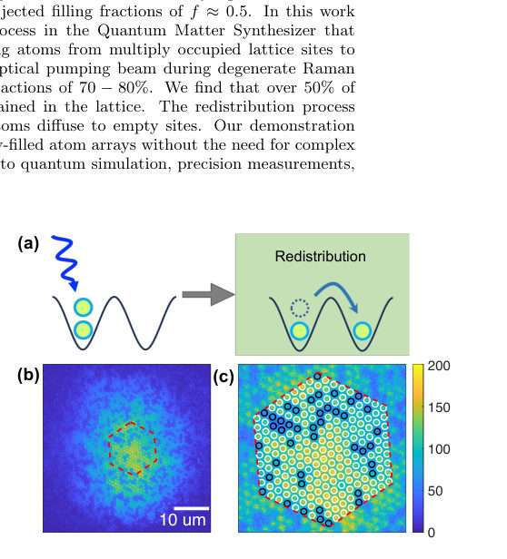
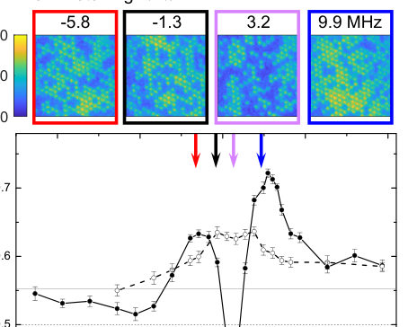
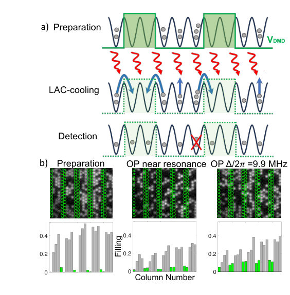
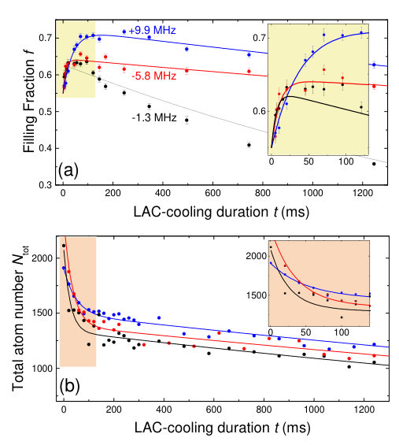
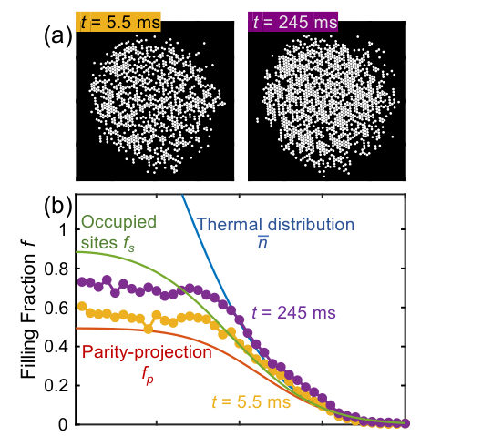
Summary. The researchers developed a way to increase the density of atoms in an optical lattice by using light to push atoms from crowded sites into empty ones. This method avoids the need for complex individual atom rearrangement and significantly improves the uniformity of atom arrays for quantum simulation.
Why it may be interesting. This work provides a scalable, experimental method for preparing high-fidelity atom arrays and offers a platform for studying non-equilibrium many-body dynamics driven by light-induced interactions.
Main problem. Achieving high, uniform filling fractions in optical lattice arrays is limited by light-assisted collisions (LACs) that typically result in parity-projected filling of only 50%.
Main result. By using a blue-detuned optical pumping beam, the researchers demonstrated a light-assisted redistribution process that increases single-atom filling fractions to 7-80% with over 50% atom retention.
Method. The team used a blue-detuned optical pumping beam during degenerate Raman sideband cooling to induce stochastic atom movement from multiply occupied sites to vacant neighboring sites.
Model / system. The experiment uses Cesium atoms in a 2D triangular optical lattice within a Quantum Matter Synthesizer, which integrates optical tweezers and a quantum gas microscope.
Key observables. Single-atom filling fraction (f), total atom number (N_tot), retention probability (beta), and atom number evolution over time.
Important parameters / regimes. Lattice constant of 880 nm, trap depth of 150 uK, blue-detuned optical pumping (9.9 MHz), and a retention probability of >50%.
Assumptions / limitations. The redistribution process is modeled using Poisson statistics for initial occupancy and a kinetic model of atom hopping/decay.
Figures summary. Figures show the spatial redistribution of atoms into DMD-cleared sites, the evolution of filling fractions and total atom numbers over time, and the asymmetry in filling efficiency between blue and red detuning.
Paper structure. The paper introduces the challenge of low filling, describes the experimental platform (Quantum Matter Synthesizer), details the light-assisted redistribution mechanism, presents results on achieved filling and atom retention, and provides a kinetic model for the redistribution dynamics.
Scalable arrays of individual atoms provide an ideal starting point for quantum information and simulation experiments. However, their preparation is often limited by light-assisted collisions (LACs), which typically result in parity-projected filling fractions of $f \approx 0.5$. In this work we demonstrate a light-assisted redistribution process in the Quantum Matter Synthesizer that overcomes this constraint by stochastically moving atoms from multiply occupied lattice sites to neighboring vacant sites. Using a blue-detuned optical pumping beam during degenerate Raman sideband cooling, we achieve single-atom filling fractions of $70-80\%$. We find that over 50$\%$ of the atoms involved in radiative collisions are retained in the lattice. The redistribution process involves many LACs over an extended time as atoms diffuse to empty sites. Our demonstration offers a scalable and efficient pathway toward unity-filled atom arrays without the need for complex rearrangement protocols, with broad applicability to quantum simulation, precision measurements, and quantum information control.
Authors: Kou-Han Ma, Yue-Hong Wu, Ning-Hua Tong
Type: theory · Category: strongly correlated electrons · PDF: https://arxiv.org/pdf/2605.19404v1
Analysis basis: full PDF text, analyzed in chunks
Topic relevance: Kondo & dissipative impurity 3/5 · Frenkel-Kontorova 2/5 · entanglement & information structure 2/5 · methods for driven-dissipative 2/5 · non-equilibrium dynamics 2/5
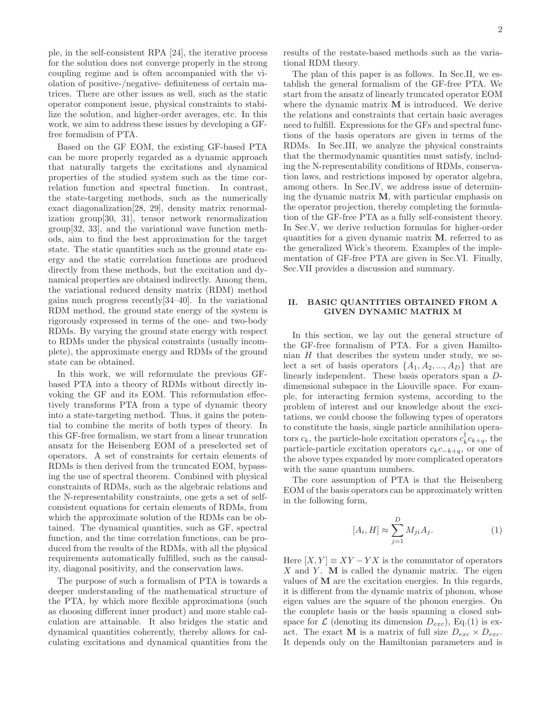
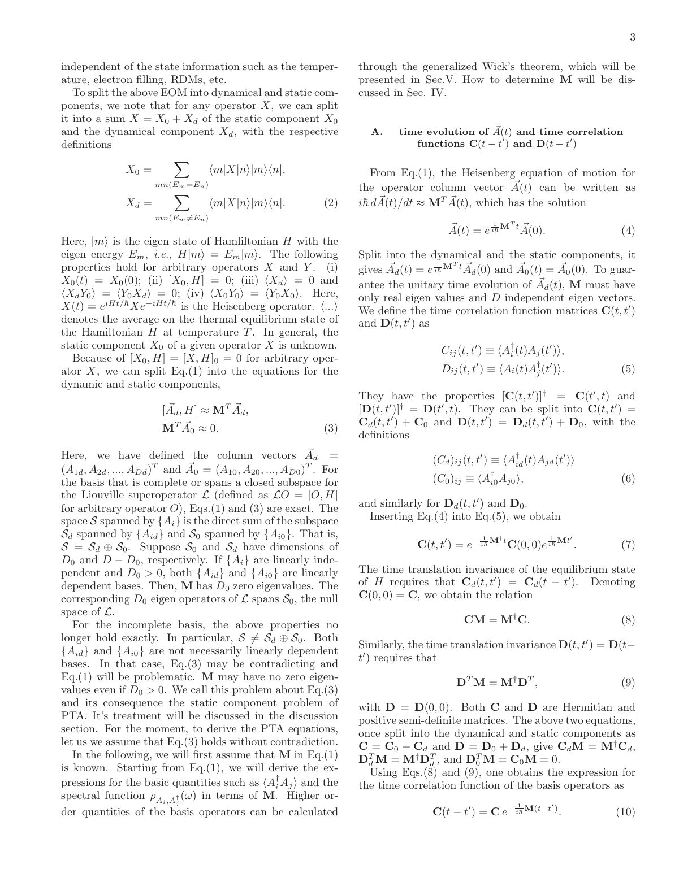
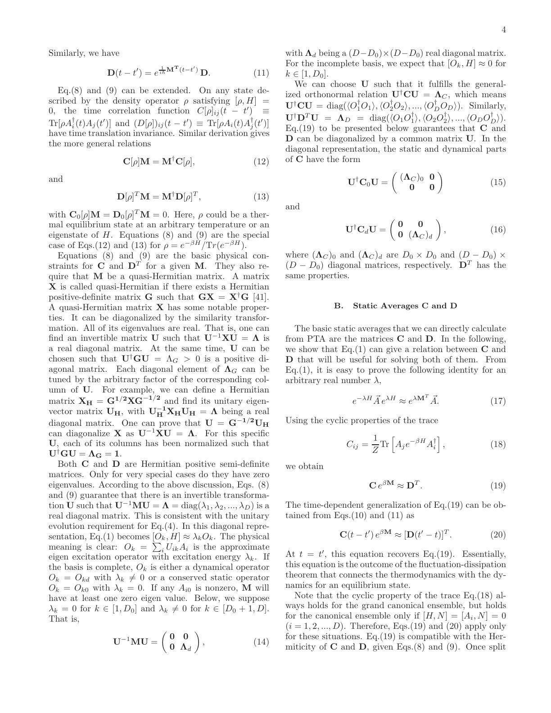
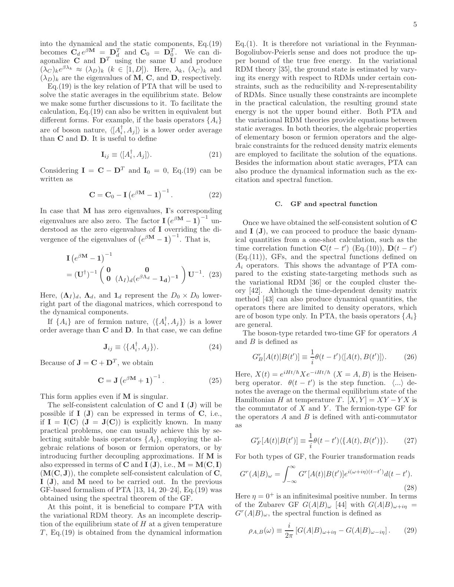
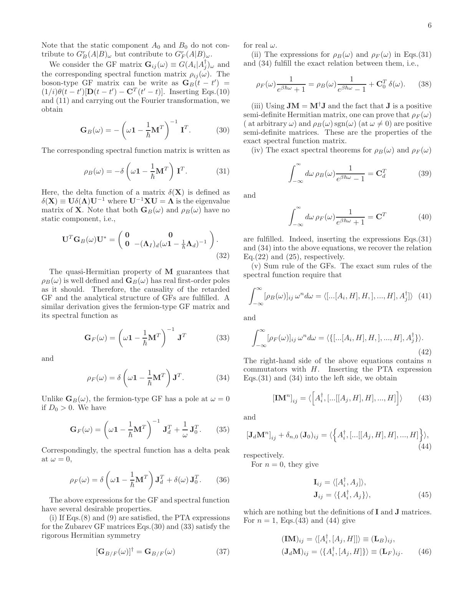
Summary. This paper introduces a new 'Green's Function-free' way to perform the Projective Truncation Approximation for many-body systems. By treating the problem as an optimization of reduced density matrices rather than a dynamic Green's function problem, the authors achieve greater numerical stability and flexibility in handling complex interactions.
Why it may be interesting. It provides a more stable and flexible numerical framework for calculating both static and dynamical properties of many-body systems without the need for the spectral theorem, bridging the gap between variational RDM theory and dynamical correlation functions.
Main problem. The existing Green's Function-based Projective Truncation Approximation (PTA) suffers from numerical instabilities, limitations in operator inner product flexibility, and difficulties addressing static operator components.
Main result. The authors develop a Green's Function-free formalism that reformulates PTA as a self-consistent theory for reduced density matrices (RDMs), transforming it from a dynamic theory into a state-targeting optimization problem.
Method. The method uses a linear truncation ansatz for the Heisenberg Equation of Motion and casts the PTA equations into an over-constrained optimization problem, connecting it to variational RDM theory.
Model / system. The framework is applicable to general many-body quantum and classical systems, specifically including interacting fermion systems, 1D nonlinear lattices, and the Kondo problem.
Key observables. Reduced density matrices (RDMs), static averages, Green's functions, spectral functions, time correlation functions, and excitation energies.
Important parameters / regimes. Temperature, electron filling, interaction strength, and the dynamic matrix M.
Assumptions / limitations. The EOM of basis operators can be accurately approximated by a linear combination of the same basis operators, and the system is in thermal equilibrium.
Paper structure. The paper introduces the problem of GF-based PTA, establishes the new GF-free formalism and the M matrix, analyzes physical constraints like N-representability, discusses the determination of M, and derives a generalized Wick's theorem.
In previous works, the projected truncation approximation (PTA) was developed as a systematic and controlled method to truncate the equation of motion of Green's functions (GFs) for a given quantum or classical many-body Hamiltonian. The static averages are obtained self-consistently with the GF through the spectral theorem. In this work, PTA is reformulated as a self-consistent theory for the reduced density matrices (RDMs) without reference to GF. We separately discuss the issues of determining the dynamical matrix ${\bf M}$ and solving the physical quantities from it. The properties of ${\bf M}$ is clarified and the solution of PTA equations is cast into an over-constrained optimization problem. This makes connection of the present theory to the variational RDM theory. We discuss various issues of PTA under this formalism, including the scheme of alternative inner product, the generalized virial theorem, the generalized Wick's theorem, and the static component problem of PTA.
Authors: Francis J. Headley, Fabian Müller, Emre Köse, Tim Fuchs, Hendrik Ulbricht, Daniel Braun
Type: theory · Category: other · PDF: https://arxiv.org/pdf/2605.19125v1
Analysis basis: full PDF text, analyzed in chunks
Topic relevance: spintronics-quantum-optics interface 3/5 · correlated / nonlocal dissipation 2/5 · methods for driven-dissipative 2/5 · non-equilibrium dynamics 2/5 · quantum measurements 2/5
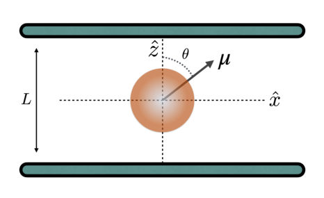
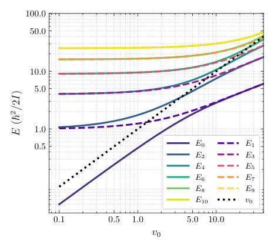
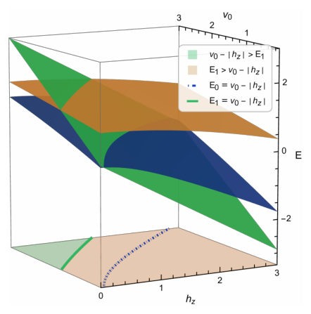
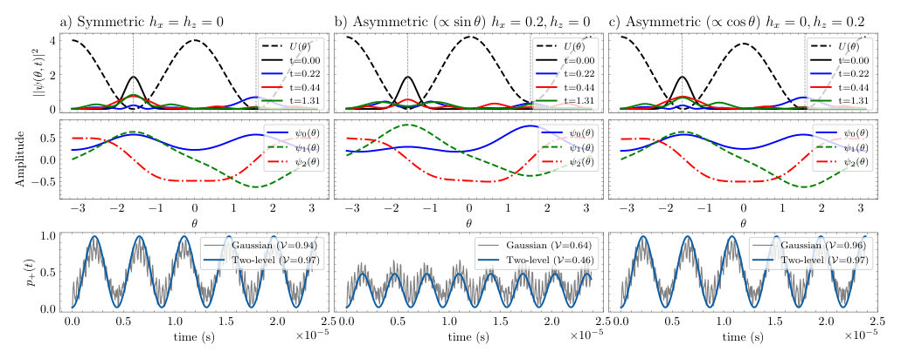
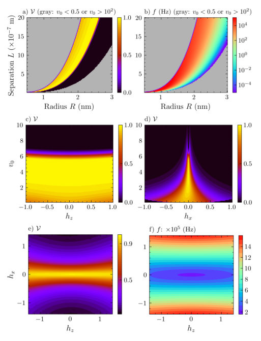
Summary. The paper explores the quantum dynamics of a rotating nanomagnet in a superconducting trap. It provides a comprehensive hierarchy of decoherence mechanisms, finding that while gas scattering and SQUID back-action are negligible, mechanical vibrations are the main obstacle to observing rotational tunneling.
Why it may be interesting. This paper is highly relevant to open quantum systems and AMO physics as it provides a detailed analysis of how environmental coupling and symmetry-breaking perturbations affect the coherence of a macroscopic quantum degree of freedom.
Main problem. Investigating the conditions for observing and preserving rotational quantum tunneling of a magnetic dipole trapped in a superconducting potential, specifically identifying dominant decoherence mechanisms.
Main result. The study identifies trap-center vibrations as the primary decoherence channel, while gas scattering, eddy currents, and SQUID back-action are found to be negligible. It also demonstrates that symmetry-preserving environmental couplings can protect tunneling visibility.
Method. The authors use a GKLS master equation approach with Born-Markov-secular approximations, exact diagonalization of the Hamiltonian, and analytical modeling of various noise sources (gas scattering, phonons, and seismic noise).
Model / system. A magnetic dipole (nanomagnet) trapped between two parallel superconducting plates, modeled as a 1D rotor with a periodic potential and external magnetic field control ($B_x, B_z$).
Key observables. Tunneling visibility, tunneling frequency, and right-well probability $p_+(t)$.
Important parameters / regimes. Barrier height ($v_0$), magnetic field strengths ($h_x, h_z$), particle radius ($R$), plate separation ($L$), and temperature ($T$).
Assumptions / limitations. Markovian dynamics, Born-Markov-secular approximations, and the heavy-particle limit for gas scattering.
Figures summary. Figure 1 shows the experimental setup; Figure 2 shows the energy spectrum vs. potential strength; Figure 3 shows energy levels and barrier height; Figure 5 shows parameter regimes for observable tunneling; Figure 6 shows the decay of tunneling probability; Figure 8 shows the phase diagram between tunneling and classical regimes.
Paper structure. The paper introduces the physical system and Hamiltonian, analyzes the energy spectrum and tunneling regimes, evaluates the impact of external magnetic fields on symmetry and visibility, quantifies various decoherence channels (gas, eddy currents, phonons, vibrations, and SQUID back-action), and concludes with experimental feasibility.
We study the quantum dynamics of the rotational degree of freedom of a nano-magnet trapped in a superconducting trap. The nano-magnet is modeled as a magnetic dipole with magnetization pinned to the easy axis of the particle. The magnetic trap then leads to a potential barrier that hinders free rotation of the particle, but through which it can tunnel. We identified rest-gas scattering as the most important decoherence mechanism at low temperatures. A shape of the particle sufficiently close to perfect rotational symmetry about the rotational axis can protect the rotational tunneling against this decoherence mechanism, and we identify experimentally feasible parameter regimes where rotational tunneling should be observable.
Authors: Zhu Cao
Type: theory · Category: quantum information and computing · PDF: https://arxiv.org/pdf/2605.19669v1
Analysis basis: full PDF text, analyzed in chunks
Topic relevance: quantum measurements 3/5 · analog quantum simulation 2/5 · entanglement & information structure 2/5 · exotic spin models in light-matter 2/5
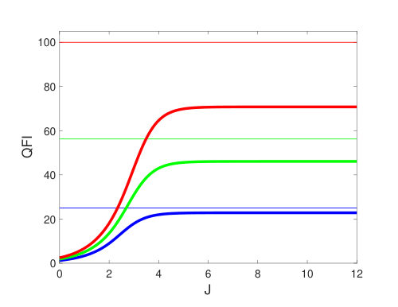
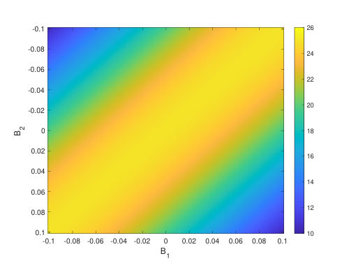
Summary. This paper establishes the fundamental limits of multi-parameter quantum sensing using probes at thermal equilibrium. It demonstrates that the Heisenberg limit is achievable and shows how precision scales with temperature and energy gaps, particularly near quantum phase transitions.
Why it may be interesting. It bridges the gap between dynamic and equilibrium metrology, providing fundamental limits for sensing parameters like local fields or coupling strengths using thermal states, which is highly relevant for quantum sensing and many-body physics.
Main problem. Determining the fundamental sensitivity bounds and precision limits for multi-parameter quantum metrology when the quantum probe is in thermal equilibrium.
Main result. The work proves that the Heisenberg limit with respect to the number of probes can be achieved in equilibrium, and identifies that near quantum critical points, super-Heisenberg scaling can occur due to closing energy gaps.
Method. The author utilizes the Quantum Fisher Information (QFI) matrix, the Quantum Cramér-Rao Bound (QCRB), and the Kubo-Mori-Bogoliubov inner product to relate precision to Hamiltonian fluctuations.
Model / system. The study considers N-partite quantum probes in a Gibbs state (thermal equilibrium) with Hamiltonians encoding multiple parameters, including specific examples like the Ising model and continuous-variable bosonic systems.
Key observables. Quantum Fisher Information (QFI) matrix, Symmetric Logarithmic Derivative (SLD), and Hamiltonian fluctuations.
Important parameters / regimes. Inverse temperature (beta), number of probes (N), energy gap (delta), and energy constraints in continuous-variable systems.
Assumptions / limitations. The system is in thermal equilibrium (closed system); for continuous-variable systems, it is assumed that second moments are finite and energy per mode is bounded.
Figures summary. The notes mention a Figure 1, but no detailed description of its contents is provided in the extracted text.
Paper structure. The paper introduces the problem of equilibrium multi-parameter metrology, derives QFI bounds using covariance matrices, analyzes the low-temperature and critical regimes, and extends the framework to continuous-variable systems.
Quantum metrology aims to enhance measurement precision beyond the classical limit by leveraging quantum resources. Unlike multi-parameter dynamic quantum metrology, many questions regarding multiparameter quantum metrology at thermal equilibrium remain elusive. In particular, the ultimate precision limits achievable in this equilibrium setting are not yet well understood. In this work, we examine the fundamental limits of estimating multiple parameters with a quantum probe at thermal equilibrium. We first show that the Heisenberg limit with respect to the number of probes can be achieved, and our bound coincides with the known single-parameter bound when only one parameter is estimated. We then consider the low temperature limit, revealing a qualitatively different behavior compared to the finite temperature case. We give an example to illustrate the usage of our main results. Finally, we show the conditions under which the sensitivity bound can be attained and the optimal measurements to achieve it.
Authors: Aleksandar Jemcov, Scott C. Morris
Type: theory · Category: quantum information and computing · PDF: https://arxiv.org/pdf/2605.19187v1
Analysis basis: full PDF text, analyzed in chunks
Topic relevance: methods for driven-dissipative 3/5 · analog quantum simulation 2/5 · correlated / nonlocal dissipation 2/5 · non-equilibrium dynamics 2/5
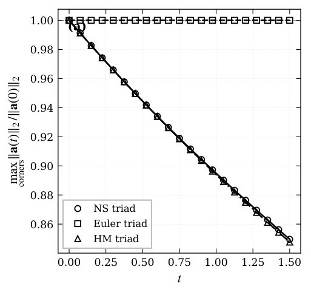
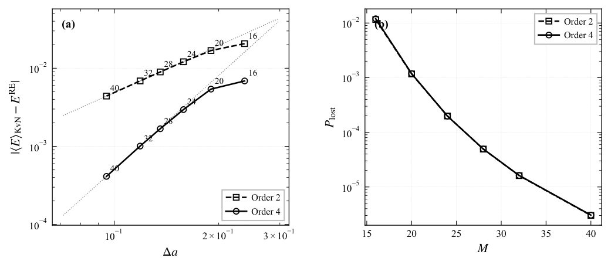
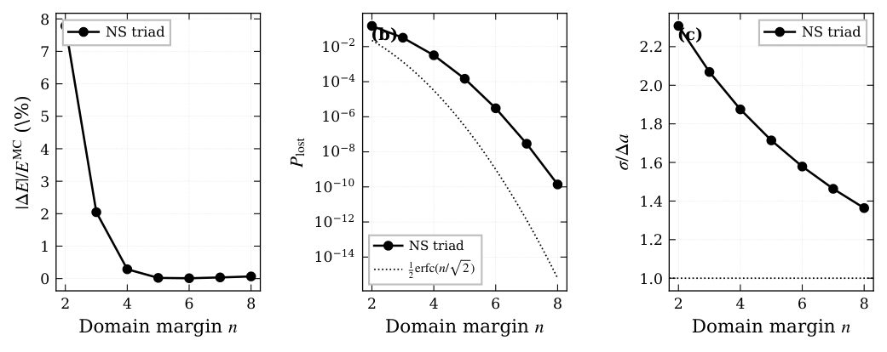
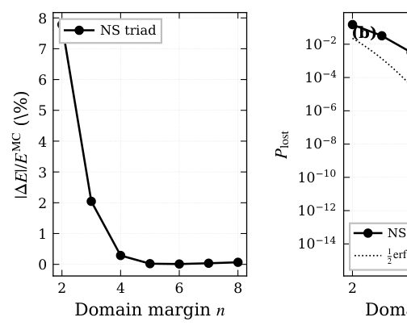
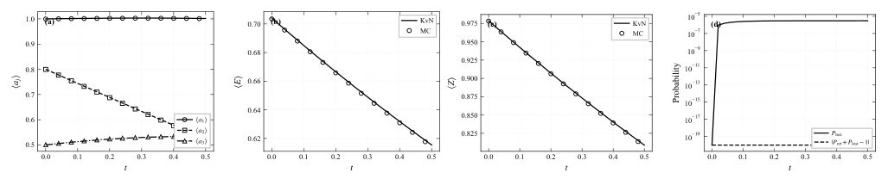
Summary. The paper introduces a new way to simulate classical fluid and plasma dynamics on quantum computers by using a unitary version of the Koopman-von Neumann equation. By using a specific operator ordering and a specialized boundary treatment, the authors achieve exact probability conservation and efficient scaling. This allows for the simulation of complex turbulent systems without the massive memory overhead typically required by phase-space doubling methods.
Why it may be interesting. This is highly relevant for researchers in open quantum systems and quantum algorithms, as it provides a way to map classical dissipative/Hamiltonian dynamics onto unitary quantum circuits with efficient scaling and minimal ancilla use.
Main problem. Developing a unitary discretization of the Koopman-von Neumann (KvN) equation that is suitable for quantum simulation of fluid and plasma dynamics without the high overhead of phase-space doubling or auxiliary degrees of freedom.
Main result. The authors propose a Weyl-ordered KvN generator and a summation-by-parts discretization that ensures exact discrete unitarity and probability conservation, validated against Monte Carlo simulations.
Method. The method uses Weyl-ordered operator symmetrization, periodic Summation-By-Parts (SBP) operators for discretization, and a split-step Kraus absorbing layer via Stinespring dilation to handle boundaries.
Model / system. The framework applies to spectrally truncated fluid and plasma dynamics, specifically using three-mode triad models: viscous Navier-Stokes, incompressible Euler, and Hasegawa-Mima drift-wave dynamics.
Key observables. Probability density functions (PDFs), statistical moments, modal kinetic energy, phase-space norm, and probability loss/retention.
Important parameters / regimes. Kinematic viscosity, wavevectors, interaction coefficients, damping rates, and grid resolution.
Assumptions / limitations. The velocity field must be real-valued to maintain anti-Hermiticity, and the primary SBP operator assumes a periodic domain requiring additional layers for finite domains.
Figures summary. Figure 1 shows the time history of the maximum norm ratio; Figure 2 presents grid convergence studies for the NS triad; Figure 3 illustrates domain sizing optimization; Figures 6 and 7 show the evolution of mean amplitudes and energy for Euler and HM triads.
Paper structure. The paper derives the Weyl-ordered generator, establishes the mathematical proof for exact discrete unitarity, introduces a Kraus layer for boundary management, and validates the scheme through convergence and conservation tests on three physical triad models.
The Koopman--von Neumann (KvN) formulation of spectrally truncated fluid and plasma dynamics is considered as a potential approach for quantum computation. The KvN framework embeds the Liouville equation into a Hilbert space with norm-preserving, unitary evolution. Here, we propose a Weyl-ordered KvN generator along with a summation-by-parts discretization, which ensures that the resulting operators are exactly unitary as required for quantum computers. The Weyl-ordered KvN generator is derived as the unique anti-Hermitian operator symmetrization for real velocity fields. The formulation operates directly in the physical amplitude space without phase-space doubling, so the Heisenberg uncertainty principle does not constrain the grid resolution during evolution. This limitation re-enters only at the measurement stage on a quantum computer. Exact discrete unitarity is proved as a purely algebraic identity that holds regardless of grid resolution or stencil order. To manage boundaries, a split-step Kraus absorbing layer is introduced via a Stinespring dilation requiring only one ancilla qubit. Validation on three test cases spanning dissipative and Hamiltonian regimes (a viscous Navier--Stokes triad, an incompressible Euler triad, and a Hasegawa--Mima drift-wave triad) confirms fourth-order convergence and machine-precision unitarity.
Authors: Amit Pradhan, Reshmi Roy, Purusattam Ray
Type: theory · Category: statistical mechanics · PDF: https://arxiv.org/pdf/2605.20116v1
Analysis basis: full PDF text, analyzed in chunks
Topic relevance: non-equilibrium dynamics 3/5 · non-equilibrium universality 3/5 · driven-dissipative phase transition 2/5
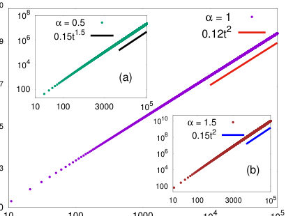
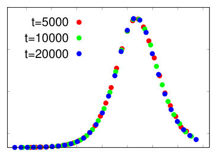
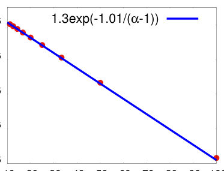
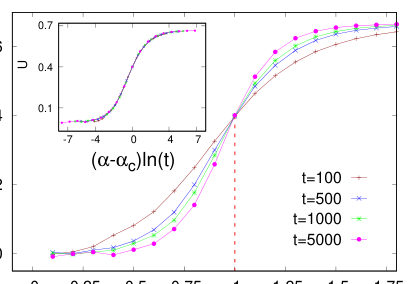
Summary. This paper demonstrates that a persistent random walk undergoes a sharp dynamical transition between super-diffusive and ballistic motion when the velocity reversal probability decays as a power law with exponent alpha = 1. The transition is characterized by a change in the expected number of velocity reversals from diverging to finite, a result applicable to various active matter and stochastic transport systems.
Why it may be interesting. not directly relevant
Main problem. Investigating the existence of a dynamical phase transition in a persistent random walk with time-dependent velocity reversal probabilities.
Main result. The study identifies a non-equilibrium dynamical transition at alpha = 1, separating a super-diffusive regime (alpha < 1) from a ballistic regime (alpha >= 1).
Method. Analytical approach using exact recursion relations, velocity correlations, and finite-time scaling analysis, supplemented by numerical simulations.
Model / system. A one-dimensional (and generalized d-dimensional) discrete-time persistent random walk where the probability of velocity reversal p(t) decays over time, specifically following a power law p(t) ~ t^-alpha.
Key observables. Mean squared displacement (MSD), velocity autocorrelation, Binder cumulant, displacement fluctuations, survival probability, and the fraction of trajectories that never flip.
Important parameters / regimes. The memory exponent alpha, the critical point alpha_c = 1, and the characteristic timescale t*.
Assumptions / limitations. The analysis assumes the asymptotic limit of large time (t -> infinity) and focuses on isotropic velocity space in higher dimensions.
Figures summary. Log-log plots of MSD vs. time for different regimes and scaling plots showing data collapse for the Binder cumulant and displacement fluctuations.
Paper structure. The paper introduces the model, derives exact recurrence relations for correlations, analyzes the three distinct transport regimes based on the power-law exponent, extends the findings to other decay protocols (exponential/linear), and validates results via numerical simulations and scaling analysis.
We study persistent random walk with time dependent velocity reversal probabilities and identify a criterion for a non-equilibrium dynamical transition. As a representative example, we consider a power law reversal probability $p(t)\sim t^{-α}$ and show that the system undergoes a transition at $α=1$, separating a super-diffusive regime for $α<1$ from ballistic regime for $α\geq 1$. Using the results for velocity correlations and persistence statistics, together with finite time scaling of the Binder cumulant and displacement fluctuations, we characterize the transition and its properties in detail. We further argue that the transition is not limited to the power law form, but can also arise for several other time dependent reversal probabilities satisfying the same criterion. The transition persists in arbitrary spatial dimensions provided isotropy of the velocity space is preserved.
Authors: Duc Tuan Hoang, Thomas Busch, Thomás Fogarty
Type: theory · Category: other · PDF: https://arxiv.org/pdf/2605.19439v1
Analysis basis: full PDF text, analyzed in chunks
Topic relevance: entanglement & information structure 3/5 · non-equilibrium dynamics 3/5 · analog quantum simulation 2/5
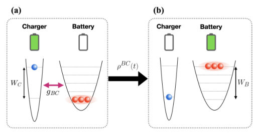
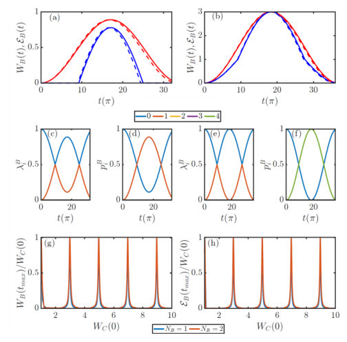
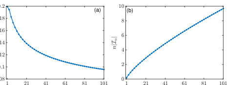
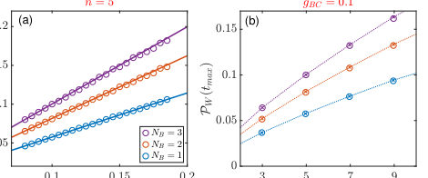
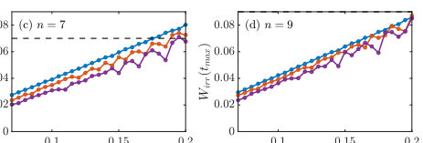
Summary. This paper demonstrates how the charging of a quantum battery can be optimized using many-body bosonic effects and tunable interactions. It shows that attractive intra-species interactions enhance charging power and that increasing particle number leads to a collective speedup in energy transfer.
Why it may be interesting. It provides a theoretical framework for optimizing energy storage in ultracold atom platforms by leveraging many-body effects and Feshbach resonances to control charging speed and efficiency.
Main problem. Investigating the charging performance, efficiency, and energy-transfer dynamics of a many-body bosonic quantum battery driven by a harmonic-oscillator charger.
Main result. The study finds that many-body effects provide a power speedup scaling with the square root of particle number, and that tuning intra-species interactions (specifically attractive interactions) can significantly enhance charging power and reduce the quantum speed limit time.
Method. The authors use exact diagonalization for numerical simulations and derive an effective two-level model to provide analytical predictions in the weak-coupling regime.
Model / system. A one-dimensional system of two-component bosonic atoms in harmonic traps, where a single-particle charger interacts with a many-body battery via a tunable inter-species contact interaction (quench protocol).
Key observables. Stored work (W_B), ergotropy (E_B), charging power (P_W), irreversible work (W_irr), Quantum Speed Limit (QSL) time, and von Neumann entropy.
Important parameters / regimes. Particle number (N_B), trap frequencies (omega_B, omega_C), intra-species interaction strength (g_B), and inter-species coupling strength (g_BC).
Assumptions / limitations. The analytical two-level model is specifically valid in the weak-interaction/weak-coupling regime, and the charging process is modeled via a sudden quench (step function) of the interaction.
Figures summary. Figures show the scaling of overlap integrals with excitation number, the time-evolution of energy and entropy for different particle numbers, and the complex dynamics of state populations in the strong-coupling regime.
Paper structure. The paper introduces the quantum battery concept, develops a two-level model for weak coupling, compares bosonic and fermionic scaling, analyzes the impact of intra-species interactions (repulsive vs. attractive), and explores the strong-coupling regime.
We study the charging performance of a one-dimensional, many-body bosonic quantum battery driven by a harmonic-oscillator charger, focusing on how many-body effects and intra-species interactions influence the energy-transfer dynamics. We show that by tuning the charger frequency, the system can reach a resonance condition where perfect energy transfer and maximal extractable work are achieved. In the weak-coupling limit this can be understood by approximating the battery-charger dynamics using an effective two-level model, which accurately predicts the maximum stored work, ergotropy, and optimal charging time. In this regime, many-body batteries exhibit enhanced charging power, reduced quantum speed limit (QSL) times, and comparable or lower irreversible work relative to single-particle batteries. We further examine the role of intra-species interactions: repulsive interactions inside the battery medium suppress performance, whereas attractive interactions can significantly enhance it, with both types of interactions generating additional charging resonances. Our results show that particle number and interaction control provide powerful tools for designing fast, efficient, and scalable quantum batteries, and point toward a feasible experimental implementation in ultracold-atom platforms.
Authors: Mario Reis, Maron F. Anka, Vinicius Gomes de Paula, Clebson Cruz
Type: theory · Category: statistical mechanics · PDF: https://arxiv.org/pdf/2605.19941v1
Analysis basis: full PDF text, analyzed in chunks
Topic relevance: methods for driven-dissipative 3/5 · non-equilibrium dynamics 3/5 · Keldysh / 2PI / non-Gaussian methods 2/5
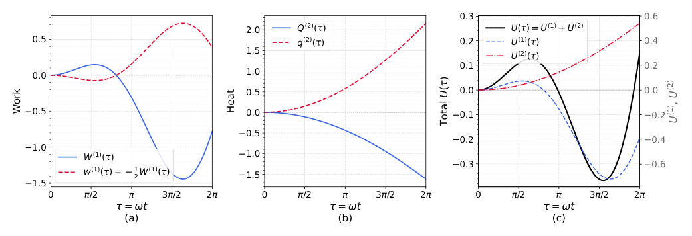
Summary. This paper uses perturbation theory to show that quantum coherence does not add a new term to the first law of thermodynamics but rather modifies the existing definitions of heat and work. By expanding the dynamics to second order, the authors connect macroscopic thermodynamic quantities directly to microscopic transition rates. This resolves long-standing debates about the energetic role of coherence in driven quantum systems.
Why it may be interesting. It provides a unified theoretical framework for understanding how quantum coherences drive energy exchange, which is crucial for the development of nonequilibrium quantum technologies and thermal machines.
Main problem. Resolving the ambiguity in the quantum first law regarding whether quantum coherence constitutes an independent energy term or can be integrated into existing definitions of heat and work.
Main result. The authors demonstrate that quantum coherence does not require an independent energetic term but instead acts to modify and decompose into coherent components of heat and work, establishing a bridge to Fermi's golden rule at second order.
Method. A time-dependent perturbative framework using the interaction picture and Dyson series expansion of the density operator and propagator up to second order.
Model / system. An open quantum system (such as a qubit) described by a time-dependent Hamiltonian and a Lindblad master equation, specifically analyzed using a two-level system subject to a harmonic external perturbation.
Key observables. Internal energy, quantum work, quantum heat, quantum coherence, power, and transition rates.
Important parameters / regimes. Weak-coupling regime, slow-driving vs. fast-driving regimes, and the long-time/steady-state limit.
Assumptions / limitations. The analysis is restricted to the perturbative regime (small interaction strength) and assumes the initial density matrix is diagonal in the energy eigenbasis.
Figures summary. Figure 1 illustrates the temporal evolution of energetic contributions, showing oscillatory reversible dynamics for work and the emergence of irreversible, dissipative heat currents.
Paper structure. The paper begins by identifying inconsistencies in existing quantum thermodynamic frameworks, introduces a perturbative expansion method, analyzes first-order and second-order energy exchanges, and concludes by linking the results to microscopic transition rates.
In quantum thermodynamics, the decomposition of energy exchanges into heat and work remains an open problem beyond weak-coupling and slow-driving regimes. Recent formulations have shown that quantum coherence introduces additional energy contributions whose thermodynamic interpretation is still under debate, raising fundamental questions about the structure of the quantum first law. In this work, we investigate this problem through a time-dependent perturbative framework applied to the first law of quantum thermodynamics. By expanding the thermodynamic quantities up to second order, we derive explicit perturbative corrections for work, heat, and coherence contributions. Our results show that the coherence term can be consistently decomposed into coherent heat and coherent work, demonstrating that quantum coherence does not require the introduction of an independent energetic contribution beyond heat and work. The formalism resolves inconsistencies associated with previous formulations of the quantum first law, including the interpretation of coherence contributions and their connection with entropy fluxes. At second order, the perturbative corrections become directly connected to transition rates governed by Fermi's golden rule, establishing a bridge between microscopic quantum transitions and macroscopic thermodynamic quantities. These results provide a physically transparent framework to investigate coherence-driven thermodynamic processes and offer new perspectives for the analysis of driven quantum systems and nonequilibrium quantum technologies.
Authors: Guilherme Fiusa, Pedro E. Harunari, Alberto J. B. Rosal, John M. Nichol, Gabriel T. Landi
Type: theory · Category: statistical mechanics · PDF: https://arxiv.org/pdf/2605.20166v1
Analysis basis: full PDF text, analyzed in chunks
Topic relevance: methods for driven-dissipative 3/5 · non-equilibrium dynamics 3/5 · quantum measurements 2/5
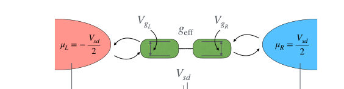
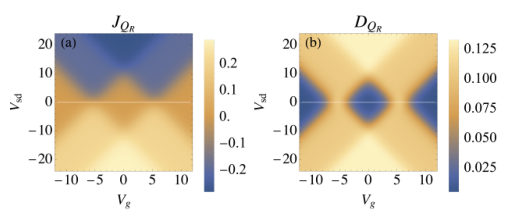
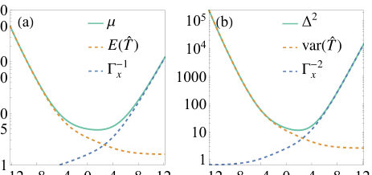
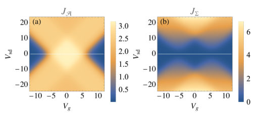
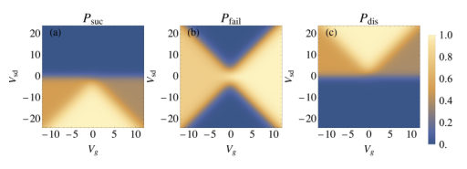
Summary. This paper introduces the 'stochastic excursions' framework to study the fine-grained dynamics of a double quantum dot. It shows how breaking trajectories into excursions reveals deep connections between transport, entropy production, and the fundamental bounds on current precision.
Why it may be interesting. It provides a powerful toolkit for analyzing non-equilibrium fluctuations and the fundamental limits of precision in mesoscopic transport, which is highly relevant to the study of open quantum systems and stochastic thermodynamics.
Main problem. Characterizing the trajectory-level dynamics, thermodynamics, and transport properties of a double quantum dot system using the stochastic excursions framework.
Main result. The study demonstrates that the excursion framework allows for a detailed decomposition of noise and transport into successes, failures, and disasters, and shows how different uncertainty relations (TUR, KUR, CUR) bound the precision of thermodynamic and kinetic currents.
Method. The authors use a classical Markov master equation approach combined with the stochastic excursions formalism, which partitions trajectories into sub-trajectories (excursions) and applies the tilted matrix method and renewal theory.
Model / system. A double quantum dot (DQD) system with four possible states (|00>, |10>, |01>, |11>) coupled to two fermionic reservoirs, modeled via a Markovian master equation in the high-temperature limit.
Key observables. Charge current, dynamical activity, entropy production, dot populations, Fano factor, and excursion/residence times.
Important parameters / regimes. Gate voltage (Vg), source-drain bias (Vsd), inter-dot coupling (geff), tunneling rates (gamma), and Coulomb repulsion energy (U).
Assumptions / limitations. The system is treated in the high-temperature limit using a classical Markov master equation; certain analytical results are derived specifically for the Coulomb blockade regime.
Figures summary. Figure 1 shows the DQD schematic; Figure 2 illustrates stochastic trajectories and the excursion decomposition; Figures 3-5 present heat maps of current, noise, and activity within the Coulomb diamond; Figure 11 compares different uncertainty relations.
Paper structure. The paper introduces the excursion framework, applies it to a DQD model to analyze transport and noise, explores the classification of transport outcomes (success/fail/disaster), investigates state populations and correlations, and concludes with a discussion on the thermodynamics of precision and uncertainty relations.
We investigate the trajectory-level dynamics of a double quantum dot system using the newly developed formalism of stochastic excursions. This approach extends full counting statistics by enabling a filtering of complex trajectories into sub-trajectories, which provide access to the intricate correlations between thermodynamic currents and excursion times. Counting observables are the main object of study in the stochastic excursion framework. Those are defined as a linear combination of transition counts multiplied by their assigned weights within one excursion. For three main counting observables -- charge current, dynamical activity, and entropy production -- we compute averages and noise contributions and show how they provide insights into the operation of the double quantum dot system. At the trajectory level, we analyze outcome distributions for transport and connect the results with trade-offs between successful and unsuccessful events that shape overall performance. We further introduce state observables, which depend on the state visited rather than the transition itself, and discuss the population of the two dots, as well as their correlations. Finally, we discuss thermodynamics of precision through thermo-kinetic uncertainty relations, showing how current precision in different regimes is fundamentally constrained either by entropy production or by dynamical activity. Altogether, our work is a case study that highlights the utility of the excursion framework as a toolkit to analyze many quantities of interest and to uncover the structure of nonequilibrium fluctuations. Moreover, it also suggests new avenues for refining uncertainty relations and understanding transport in mesoscopic systems.
Authors: Charlie Nation, Rick P. A. Simon, Shreya Banerjee, Francesco Martini, Alessandro Ricottone, Federico Cerisola, Luca Dellantonio
Type: theory · Category: numerical methods · PDF: https://arxiv.org/pdf/2605.18966v1
Analysis basis: full PDF text, analyzed in chunks
Topic relevance: non-equilibrium dynamics 3/5 · analog quantum simulation 2/5 · entanglement & information structure 2/5
Summary. This paper introduces an automated algorithm to find and exploit Clifford symmetries in many-body quantum systems using graph theory. By mapping Hamiltonians to graphs, the method identifies non-local symmetries that allow for massive reductions in the Hilbert space required for exact diagonalization. This enables the simulation of much larger systems, up to 1,000 qubits, with significantly reduced computational overhead.
Why it may be interesting. This is highly relevant for many-body dynamics as it provides a scalable, automated way to exploit hidden symmetries to perform much larger classical simulations of quantum systems than previously possible.
Main problem. Finding and exploiting non-local Clifford symmetries in large-scale quantum many-body systems is traditionally difficult and relies on human intuition, limiting the ability to reduce computational complexity in simulations.
Main result. The authors developed an algorithmic approach using graph automorphism to automate the discovery of Clifford symmetries, enabling exact diagonalization for systems up to 1,000 qubits and providing speed-ups of up to 256x in memory and time.
Method. The method maps the Hamiltonian to a graph representation using the symplectic formalism of the Clifford group and employs graph automorphism algorithms to identify symmetries, followed by a basis transformation to minimize the qubit cost of the symmetry operator.
Model / system. The method is demonstrated on arbitrary many-body Hamiltonians, including random Pauli models, the Fermi-Hubbard ladder, the Transverse-Field Ising (TFI) ladder, and the Heisenberg XXZ model.
Key observables. Qubit cost Q(S) of the symmetry, ground state energy, and time evolution dynamics.
Important parameters / regimes. System size up to n = 1000 qubits; scalability is determined by the reduced qubit count Q(S_min) and the dimension of the symmetry sectors.
Assumptions / limitations. The efficiency of the approach depends on the existence of symmetries that can partition the system into small, disjoint components; the method is limited to Clifford symmetries.
Figures summary. Figure 1 illustrates symmetry-induced block-diagonalization; Figure 2 shows the mapping of a 2-qubit Hamiltonian to a graph with vertices, edges, and circuits; Figure 3 compares symmetry finding times across models and demonstrates performance gains in RAM and time for the Heisenberg XXZ model.
Paper structure. The paper introduces the problem of symmetry discovery, presents a graph-based algorithm leveraging the Clifford group, details the method for minimizing symmetry qubit cost, demonstrates scalability on various physical models, and discusses performance gains in exact diagonalization.
Obtaining the symmetries of a model is a critical step towards developing an understanding and ultimately analytically or numerically solving the model. However, finding symmetries is generally extremely complicated, often being the result of insightful thinking. In this work, we complement human ingenuity with an algorithm. We leverage the classically efficient Clifford group to find symmetries for arbitrary many-body Hamiltonians via a graph representation. We demonstrate our method on random and physical Hamiltonians, with instances of up to one thousand qubits and demonstrate how our approach can provide deeper understanding of the model.
Authors: Ofer Biham, Gilad Hertzberg Rabinovich, Eytan Katzav
Type: theory · Category: statistical mechanics · PDF: https://arxiv.org/pdf/2605.19023v1
Analysis basis: full PDF text, analyzed in chunks
Topic relevance: non-equilibrium dynamics 3/5 · driven-dissipative phase transition 2/5 · non-equilibrium universality 2/5

Summary. This paper provides an exact analytical treatment of stopping statistics in a deterministic 1D traffic model. It characterizes the transition between free-flowing and congested phases through the lens of individual particle trajectories and first-passage time distributions.
Why it may be interesting. The mapping of deterministic particle dynamics to first-passage processes and record statistics is highly relevant to understanding relaxation and non-equilibrium phase transitions in many-body systems and driven-dissipative dynamics.
Main problem. The paper investigates the transient dynamics and relaxation processes in a deterministic 1D cellular automaton model of traffic flow, specifically focusing on the statistical properties of individual car trajectories.
Main result. The authors derive closed-form expressions for the distributions of first-stopping and last-stopping times, and show that the system undergoes a continuous dynamical phase transition at density p=1/2 with quadratic divergence of relaxation time.
Method. The study employs a first-passage process framework, mapping traffic dynamics to 1D random walk record statistics and mountain landscapes, using combinatorial tools like Catalan and Lobb numbers and generating functions.
Model / system. A deterministic one-dimensional cellular automaton (DSTF model) equivalent to Wolfram's Rule 1rag, representing traffic flow on a 1D lattice with periodic boundary conditions.
Key observables. First-stopping (FS) times, last-stopping (LS) times, stopping probability P_S(t), number of stopping events N_S, and average velocity.
Important parameters / regimes. Car density p, lattice size L, and the critical density p_c = 1/2.
Assumptions / limitations. The model is deterministic (no stochasticity), assumes an infinite system limit for certain distributions, and focuses on random initial configurations.
Figures summary. Space-time diagrams of car movement, mappings of traffic to mountain landscapes, and comparisons between analytical results and large-scale simulations for various density regimes.
Paper structure. The paper introduces the DSTF model, establishes a mapping to random walk records, derives probability distributions for stopping events using combinatorics, analyzes the critical behavior and relaxation near p=1/2, and provides detailed statistical analysis of last-stopping times and event counts.
We present analytical results for first-passage processes in a deterministic one-dimensional cellular automaton (CA) model of traffic flow. Starting at time $t=0$ from a random initial state with car density p, at every time step $t\ge 1$ each car moves one step to the right if the cell on its right is empty, and is stopped if it is occupied by another car. The model, which coincides with CA rule 184 in Wolfram's numbering scheme, exhibits a continuous dynamical phase transition at $p=1/2$, between a low-density free-flowing phase and a high-density congested phase. Using the framework of first-passage processes, we derive a closed-form expression for the distribution $P(T_{FS}=t)$ of first-stopping (FS) times, which is the probability that a randomly selected car will be stopped for the first time at time $t$. We also obtain a closed-form expression for the stopping probability $P_S(t)$, which is the probability that a randomly selected car will be stopped at time $t$. In the low-density phase of $0
Authors: Jiong Cheng, Yanqiang Yang, Wenlin Li, Xun Li
Type: theory · Category: statistical mechanics · PDF: https://arxiv.org/pdf/2605.19770v1
Analysis basis: full PDF text, analyzed in chunks
Topic relevance: non-equilibrium dynamics 3/5 · correlated / nonlocal dissipation 2/5 · methods for driven-dissipative 2/5

Summary. This paper develops a quantum master equation to describe how energy is transferred from a shocked phonon environment to high-frequency molecular vibrations in energetic materials. It identifies 'doorway modes' as critical intermediaries that facilitate energy up-pumping. The study reveals that the efficiency of this process depends on the matching between phonon spectral density and the frequencies of these intermediate modes.
Why it may be interesting. It provides a sophisticated application of open quantum system dynamics (Redfield-type master equations) to a non-equilibrium, non-thermal environment, illustrating how engineered or external driving can modulate energy transport through intermediate 'doorway' states.
Main problem. The lack of a microscopic, fully quantum description of energy transfer and decoherence in energetic materials (EMs) subjected to external shock, specifically regarding how non-thermally excited phonons drive molecular vibrations.
Main result. The authors derive a quantum master equation showing that 'doorway modes' act as energy conduits, extracting energy from a shocked phonon bath to excite high-frequency molecular modes via an effective coherent drive and dissipation.
Method. A quantum master equation approach using mean-field, Born-Markov, and Rotating Wave Approximations (RWA) to trace out phonon bath degrees of freedom.
Model / system. A multiphonon up-pumping model where a continuous phonon bath (environment) is coupled to localized molecular vibrational modes (system) via a Hamiltonian containing phonon-vibration and vibration-vibration nonlinear couplings.
Key observables. Excitation numbers (populations) of vibrational modes, effective coherent driving strength (Ek), and dissipation rates (gamma_k).
Important parameters / regimes. Phonon density of states S(omega), Debye cutoff frequency (omega_D), phonon-vibration coupling strength, and non-thermal phonon distribution induced by shock.
Assumptions / limitations. The phonon bath is treated as a continuous environment in a Markovian regime; the use of mean-field approximation for phonons; and the energy-matching condition for the up-pumping process.
Figures summary. Fig 1 shows the model schematic with phonon and vibrational modes; Fig 2 plots phonon density of states and shock-induced occupation; Fig 3 shows the long-time evolution of driving strength; Fig 6 and 7 compare effective vs. ineffective energy transfer pathways.
Paper structure. The paper introduces the problem of energy transfer in EMs, proposes a quantum multiphonon up-pumping model, derives a quantum master equation via mean-field and Born-Markov approximations, performs numerical simulations to demonstrate energy extraction, and analyzes the efficiency of different vibrational pathways.
A fully quantum multiphonon up-pumping model is proposed to characterize coherent energy transfer in energetic materials (EMs) subjected to external shock. After eliminating the degrees of freedom of the phonon bath within a mean-field approximation, we derive a quantum master equation governing the energy transfer among vibrational modes. Our analysis reveals that doorway modes of different frequencies undergo distinct levels of effective coherent driving and dissipation, induced by the shocked phonon environment. This not only clarifies the microscopic origin of coherent phonon generation, but also reveals the possibility of modulating such coherent driving and dissipation. Based on numerical simulations of a simplified model using the master equation, we demonstrate how doorway modes extract energy from the phonon environment and subsequently excite higher-frequency molecular vibrational modes. This work offers a renewed perspective for understanding the mechanisms of energy transfer in energetic materials.
Authors: Ferney J. Rodriguez, Luis Quiroga, Neil F. Johnson
Type: theory · Category: quantum information and computing · PDF: https://arxiv.org/pdf/2605.19873v1
Analysis basis: full PDF text, analyzed in chunks
Topic relevance: interference shaping light 3/5 · analog quantum simulation 2/5 · entanglement & information structure 2/5
Summary. This paper proposes using light with orbital angular momentum to control many-body states in quantum dots, bypassing the limitations of standard uniform light. It provides an analytical framework for implementing single- and two-qubit gates using the unique selection rules of twisted light. The work establishes a scalable architecture for a photonic control layer in quantum computing.
Why it may be interesting. It bridges quantum optics (OAM/twisted light) with many-body physics, offering a novel way to use structured light as a control bus for interacting electrons and exploring the intersection of light-matter interaction and topological excitations.
Main problem. Developing a practical quantum computing control primitive using twisted light (OAM) to address and manipulate many-body correlation sectors in quantum dots that are otherwise inaccessible to uniform dipolar probes.
Main result. The authors demonstrate that twisted light enables a unified photonic control layer for writing, reading, and scaling qubits by breaking Kohn's theorem to access internal electron correlations, providing a roadmap for single- and two-qubit gates.
Method. The study uses the analytically solvable Calogero (1/r^2) interaction limit as a symmetry skeleton, supplemented by 1/N expansion for N=3 systems and SU(1,1) algebraic frameworks to derive closed-form gate parameters.
Model / system. The system consists of few-electron (N=2 and N=3) semiconductor quantum dots in a 2D parabolic confinement under a perpendicular magnetic field, modeled using Calogero and Coulomb interaction potentials.
Key observables. Relative angular momentum quantum number (m), energy spectrum, chiral spectroscopic fingerprints, Rabi frequency, and transition matrix elements.
Important parameters / regimes. OAM index (l), helicity (sigma), interaction strength (alpha), magnetic field strength (omega_c/omega_0), and inter-dot distance (D).
Assumptions / limitations. Primary analytical results rely on the 1/r^2 Calogero limit; the two-qubit extension is proposed as a plausible extension rather than fully demonstrated; N=3 results rely on 1/N expansion approximations.
Figures summary. Figure 1 shows a schematic of twisted-light pulses interacting with electrons in a quantum dot; Figure 2 is a heat map of ground-state correlation sectors showing level crossings as a function of magnetic field and interaction strength.
Paper structure. The paper introduces the problem of accessing dark states, establishes the twisted-light selection rules, uses the Calogero model to define single-qubit gate parameters, proposes two-qubit entangling mechanisms, and provides a roadmap for scaling to N=3 topological systems.
Twisted light carries orbital angular momentum (OAM) and can drive excitations of confined, interacting electrons that are dark to uniform dipolar probes. Here we show how this ``beyond-Kohn's-Theorem'' optical channel can become a concrete control primitive for quantum computing. Correlation sectors in few-electron quantum dots -- characterized by the relative angular momentum quantum number -- form a tunable ladder of many-body states that are robust in the limited sense of symmetry-protected selection rules and persistent chiral spectroscopic fingerprints; full topological gap protection requires three or more electrons. A twisted-light pulse with prescribed OAM index and polarization provides fast optical write, read, and scalable addressing of these sectors via the selection rule $Δ|m|=\pm(l+σ)$. In the analytically solvable Calogero ($1/r^2$) interaction limit, both the energy spectrum and the twisted-light matrix elements are closed-form functions of the interaction strength, allowing gate parameters (Rabi frequency, qubit frequency, anharmonicity, and leakage rates) to be written down explicitly. We map these results onto a universal single-qubit gate set, propose a concrete two-qubit entangling mechanism via state-dependent Coulomb coupling between adjacent dots, and identify the dominant decoherence channel (quadrupolar charge noise). A semi-analytic $N=3$ extension using the $1/N$ expansion provides a design-level scaffold for the topological roadmap, including quasihole sector addressing. The central operational message is that twisted light enables WRITE (pulse-create a correlation sector), READ (spectroscopically diagnose correlations), and SCALE (optical addressing via spatial light modulator) in a unified photonic control layer. Throughout, screened and Coulomb interactions preserve the same qualitative chiral fingerprints established in the solvable limit.
Authors: Sebastian Holmén, T. Rick Perche
Type: theory · Category: other · PDF: https://arxiv.org/pdf/2605.18945v1
Analysis basis: full PDF text, analyzed in chunks
Topic relevance: quantum measurements 3/5 · Keldysh / 2PI / non-Gaussian methods 2/5 · entanglement & information structure 1/5
Summary. This paper provides a way to reconstruct the fundamental correlations of a quantum field by measuring the correlations between a lattice of particle detectors. It moves beyond perturbative methods and provides a rigorous way to account for the physical size of detectors using a multipole expansion.
Why it may be interesting. not directly relevant
Main problem. Developing a non-perturbative protocol to measure the two-point (Wightman) function of a quantum field using local probes and quantifying the errors introduced by finite-sized detectors.
Main result. The authors derive a protocol to reconstruct the field's two-point function from correlations between gapless Unruh-DeWitt detectors and show that the error from finite detector size scales as O(l^2).
Method. The study uses the Magnus expansion for non-perturbative time evolution and a spacetime multipole expansion in Riemann Normal Coordinates to approximate smeared field propagators.
Model / system. A massless Klein-Gordon field in Minkowski or curved (globally hyperbolic) spacetime interacting with a lattice of gapless Unruh-DeWitt (UDW) detectors modeled as qubits.
Key observables. Two-point correlation functions of Pauli operators (e.g.,
Important parameters / regimes. Coupling strength (lambda), detector interaction size (l), spacetime separation (s), and the ratio s/l.
Assumptions / limitations. The Magnus expansion is truncated at second order, detectors start in the ground state, and the interaction region is modeled as a Gaussian-shaped spacetime smearing.
Figures summary. Figures compare point-like, smeared, and multipole expansion versions of the two-point function, and visualize classical field solutions for coherent states and wavepackets.
Paper structure. The paper begins by defining the state estimation problem, introduces the gapless detector model and the non-perturbative protocol, derives explicit detector correlations, and concludes with an error analysis using multipole expansions in various field states.
We present a non-perturbative method through which local probes can access the two-point function of a quantum field within a region of spacetime. By considering a lattice of gapless particle detectors, we identified the probe observables that encode the field's two-point function. We quantify the discrepancies introduced by physical finite-sized interaction regions by performing a spacetime multipole expansion of the smeared two-point function. Our protocol expresses the two-point function entirely in terms of measurable detectors correlations, providing an operational notion of states in QFT.
Authors: Gurvir Singh
Type: theory · Category: quantum information and computing · PDF: https://arxiv.org/pdf/2605.19182v1
Analysis basis: full PDF text, analyzed in chunks
Topic relevance: entanglement & information structure 3/5 · quantum measurements 2/5
Summary. This paper demonstrates that bound entangled states can be effectively used for Ancilla-Assisted Quantum Process Tomography. It provides an explicit construction of faithful PPT states and shows that these states can perform as well as certain Werner states in reconstructing quantum channels. The study also highlights that local filtering, while potentially enhancing entanglement measures, can be detrimental by making the states unsuitable for reliable reconstruction.
Why it may be interesting. This is interesting for researchers in quantum information and open quantum systems because it expands the known toolkit of usable quantum states for process characterization, showing that even non-distillable entanglement can be operationally useful.
Main problem. The paper investigates whether bound entangled states (entangled states that are not distillable) can be used as faithful probes for Ancilla-Assisted Quantum Process Tomography (AAQPT).
Main result. The authors prove that certain bound entangled states can indeed be used for AAQPT, demonstrating that they can serve as faithful probes with performance comparable to certain Werner states.
Method. The study uses the Choi-Jamiołkowski isomorphism, the realignment criterion (CCNR) for entanglement detection, and numerical optimization via a see-saw procedure to analyze state properties.
Model / system. The work focuses on bipartite quantum systems in d x d dimensions, specifically examining families of states including Werner states, Isotropic states, and specifically constructed PPT (Positive Partial Transpose) entangled states.
Key observables. Faithfulness (invertibility of the realigned operator), trace norm of the realigned matrix, and the Schmidt number.
Important parameters / regimes. Local dimension (d), the parameter f for Werner states, and the parameter alpha for Isotropic states.
Assumptions / limitations. The analysis assumes the use of the realignment criterion for entanglement detection and focuses on the utility of states under the framework of AAQPT.
Figures summary. Figure 1 provides a schematic diagram illustrating the setup of the Ancilla-Assisted Quantum Process Tomography (AAQPT) procedure.
Paper structure. The paper begins by addressing an open question regarding the utility of bound entangled states, proceeds to provide an explicit construction of useful PPT states, analyzes the impact of local filtering operations, compares the performance of various state families (Werner, Isotropic, and bound entangled), and concludes with an appendix containing explicit density matrices.
Lu \textit{et al.} [Ann. Phys. (Berlin) \textbf{534}, 2100550 (2022)] posed the question of whether bound entangled states can be used for ancilla-assisted quantum process tomography (AAQPT). In this work, we answer this question in the affirmative by explicitly demonstrating that certain bound entangled states can be used for AAQPT. We further show that, although local filtering operations may improve the trace norm of the realignment criterion, they are essentially ineffective for AAQPT, as they render the resulting states \emph{unfaithful} and therefore unsuitable for reliable process reconstruction. Further, we investigate the efficiency of bound entangled states for AAQPT and establish quantitative bounds by comparing their performance with Werner and isotropic states. Our results therefore provide a new application of bound entangled states in the context of ancilla-assisted quantum process tomography.
Authors: Jeongho Bang, Su-Yong Lee
Type: theory · Category: quantum information and computing · PDF: https://arxiv.org/pdf/2605.19198v1
Analysis basis: full PDF text, analyzed in chunks
Topic relevance: quantum measurements 3/5 · entanglement & information structure 2/5

Summary. This paper introduces Causal Fisher-Information Inequalities as a tool to prove that certain statistical data cannot be explained by classical causal models. It shows that violating these inequalities is equivalent to discovering a metrological advantage where quantum systems achieve higher precision than any possible classical causal chain.
Why it may be interesting. It provides a new design principle for quantum sensing ('causal-model engineering') and links causal inference directly to the certification of quantum metrological resources.
Main problem. The paper seeks to develop a unified framework for falsifying classical causal models and certifying metrological advantages using Causal Fisher-Information Inequalities (CFIIs).
Main result. The authors prove that violations of CFIIs rigorously falsify specific classical causal models and simultaneously serve as a resource certificate for precision levels unattainable by those classical models.
Method. The study uses a mathematical framework of Directed Acyclic Graphs (DAGs) and information resistance, supplemented by AI-assisted adversarial stress tests and numerical simulations of a noisy qubit.
Model / system. The framework is general but demonstrated using a single-qubit system undergoing coherent rotation under a Hamiltonian H = 1/2 sigma_x, subject to dephasing and readout error.
Key observables. Fisher Information (FI), Causal Fisher-Information Inequalities (CFII) witness, and the Gain Ratio (Gamma).
Important parameters / regimes. Additive parameter (theta), dephasing rate (gamma), readout error (epsilon_r), and number of shots (Ns).
Assumptions / limitations. The framework assumes classical causal models are defined by DAGs, conditional independence, and modular parameter dependence; it also assumes the parameter is additive across the causal path.
Figures summary. Figures show the crossing point of the gain ratio relative to dephasing, the scaling of statistical significance (Z-score) with shot count, and the calibration of the FI estimator.
Paper structure. The paper introduces the CFII framework, derives the causal-path series law for information resistance, demonstrates metrological gain through synergy, and validates the robustness of the witness using an AI-driven adversarial optimization approach.
Fisher-information inequalities have recently been used as operational witnesses of nonclassical metrological behavior, but their physical meaning is often tied to a particular narrative, such as, segmented dynamics or discrete trajectories. We show that a broader interpretation is available and, in fact, more natural: once an experiment is assumed to admit a classical causal model specified by a directed acyclic graph, conditional independences, and modular parameter dependence, the corresponding Fisher informations are forced to obey causal Fisher-information inequalities (CFIIs). The backbone result is a causal-path series law: for an additive causal parameter that propagates through a classical path $A \to C \to B$, the inverse Fisher information behaves as an information resistance and must add in series. Consequently, any CFII violation is a rigorous falsification of the entire classical causal model class. We then show that the violation is automatically a metrological resource certificate, because it implies a precision that no member of the classical causal class can attain. The gain mechanism is identified as Fisher-information synergy, i.e. off-diagonal score correlations that classical modularity forbids. A single-qubit coherent-rotation example demonstrates the deterministic CFII violation, estimator-level achievability of the resulting gain, robustness against split-optimized classical benchmarks, and a chain-amplified advantage in long causal decompositions. Finally, an AI-assisted adversarial finite-data stress test shows that the witness remains certifiable under the realistic visibility loss and readout error, while optimized modular classical causal models saturate but do not cross the CFII frontier.
← Index · ← Previous · Next →